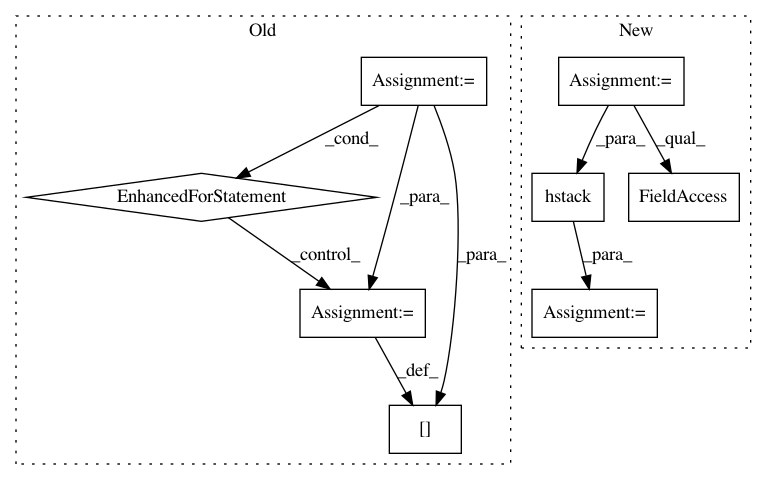

7c960272c5ab4d25a022538f5849addec3e6bfee,loglizer/preprocessing.py,FeatureExtractor,transform,#FeatureExtractor#Any#,71
Before Change
X_new: The transformed data matrix
X_df = pd.DataFrame(columns=self.events)
for i in range(X_seq.shape[0]):
X_df.loc[i, :] = [0] * len(self.events)
event_counts = Counter(X_seq[i])
for event, count in event_counts.items():
if event in self.events:
X_df.loc[i, event] = count
X = X_df.fillna(0).values
num_instance, num_event = X.shape
if self.term_weighting == "tf-idf":
After Change
X_counts.append(event_counts)
X_df = pd.DataFrame(X_counts)
X_df = X_df.fillna(0)
empty_events = set(self.events) - set(X_df.columns)
for event in empty_events:
X_df[event] = [0] * len(X_df)
X = X_df[self.events].values
if self.oov:
oov_vec = np.sum(X_df[X_df.columns.difference(self.events)].values > 0, axis=1)
X = np.hstack([X, oov_vec.reshape(X.shape[0], 1)])
num_instance, num_event = X.shape
if self.term_weighting == "tf-idf":
idf_matrix = X * np.tile(self.idf_vec, (num_instance, 1))
In pattern: SUPERPATTERN
Frequency: 3
Non-data size: 8
Instances
Project Name: logpai/loglizer
Commit Name: 7c960272c5ab4d25a022538f5849addec3e6bfee
Time: 2019-02-25
Author: zhujm.home@gmail.com
File Name: loglizer/preprocessing.py
Class Name: FeatureExtractor
Method Name: transform
Project Name: IndicoDataSolutions/Enso
Commit Name: ae5602d3d008cc8b290b32e380fb72ae8fb53bd7
Time: 2018-04-18
Author: madison@indico.io
File Name: enso/metrics/basic_classification.py
Class Name: RocAuc
Method Name: evaluate
Project Name: nipy/dipy
Commit Name: f698c4dbfc266bae9c1d1ceb0d906863c9b54e2e
Time: 2013-05-14
Author: caruyer@gmail.com
File Name: dipy/core/sphere_stats.py
Class Name:
Method Name: random_uniform_on_sphere